INLS 641: Visual Analytics
Evan Galloway
Program on Health Workforce Research and Policy
The Cecil G. Sheps Center for Health Services Research
The University of North Carolina at Chapel Hill
November 17, 2022
What I am going to cover
- My background and where I am now
- Projects
- NC Health Workforce
- NC Nursecast
- Tools
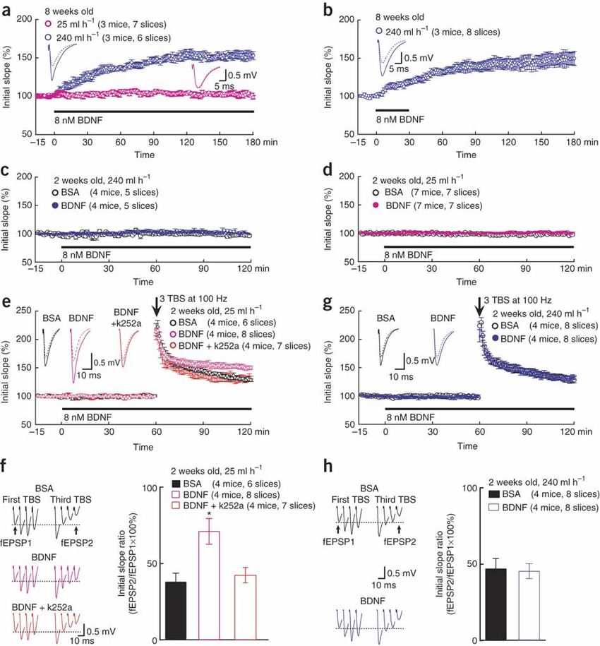
Ji, Yuanyuan & Lu, Yuan & Yang, Feng & Shen, Wanhua & Feng, Linyin & Duan, Shumin & Lu, Bai. (2010).
Acute
and gradual increases in BDNF concentration elicit distinct signaling and functions in neurons. Nature
neuroscience. 13. 302-9. 10.1038/nn.2505.
Started out working in neurobiology. This has a couple consequences for future career
- I learned the basic of how to program, mostly doing bioinformatics type stuff.
- I learned the value of well designed data visualization. One of the researchers I worked for (who co-wrote the
paper form which this diagram from) told me he almost always only looked at figures . . . Power of visualization.
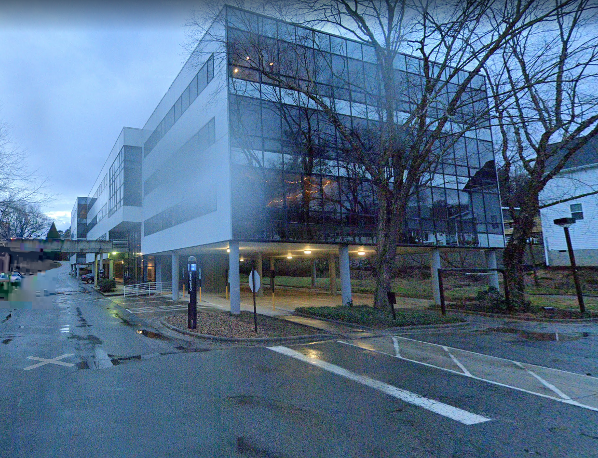
After a few other detours, got my masters in BMHI at UNC. Took this class, systems analysis, databases, and
web databases, and then shortly after got a job at at Sheps. (seen here) Still work mostly from home.
Work for program on health workforce. Do a mix of data analysis and visualization.
The program does research on the health workforce, physicians, nurses, dentists, etc but we also collect and house
a 40+ year set of data.
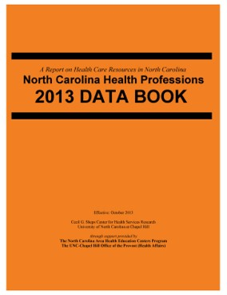
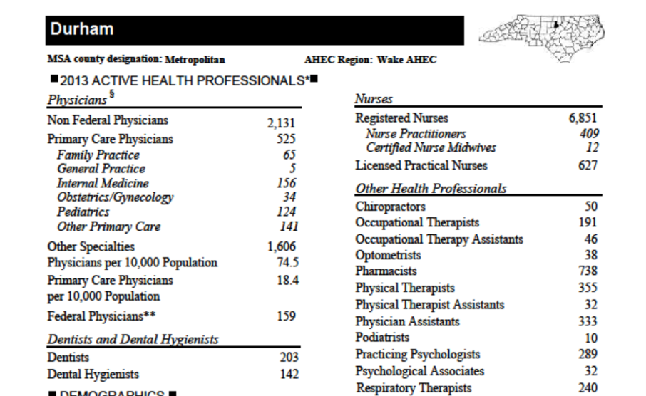
We get data from the licensing boards (explain licensing)
And for most of those 40 years they produced something like this data book. I was hired to build data
visualizations around our data and our first project was to make an online data book.
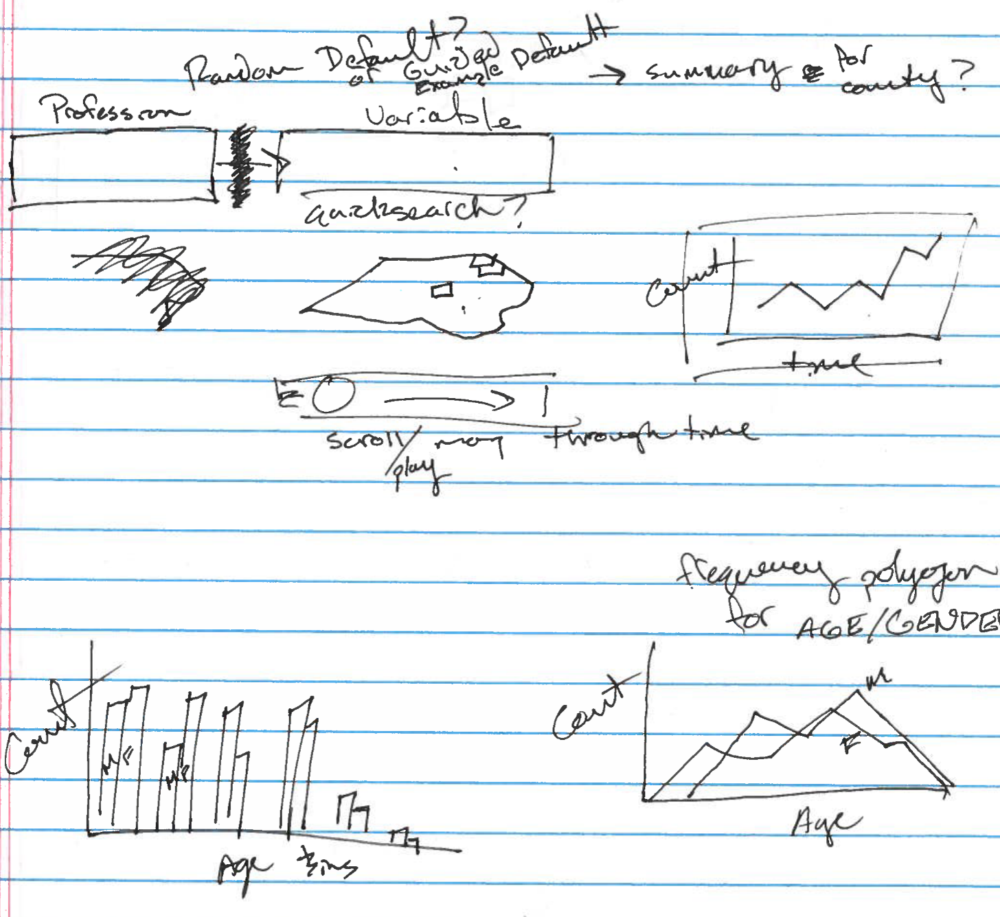
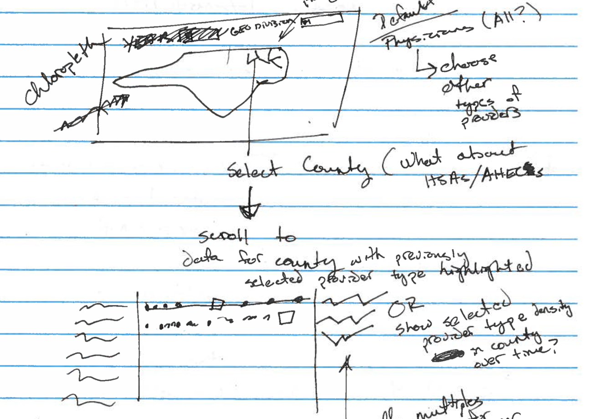
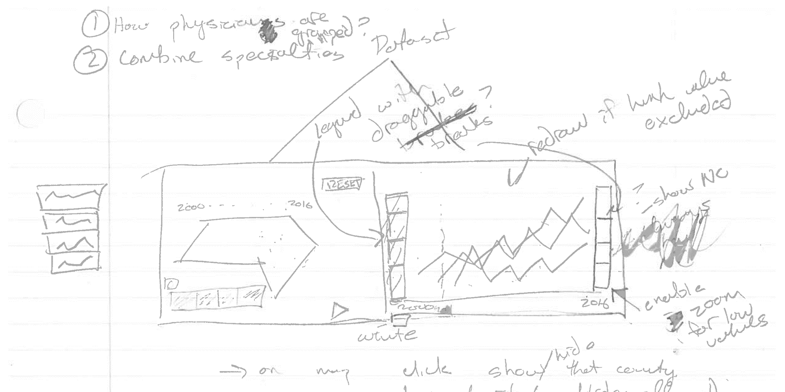
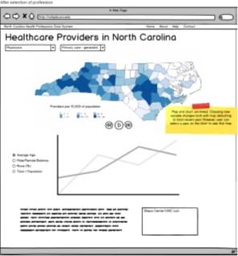
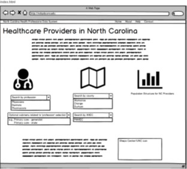
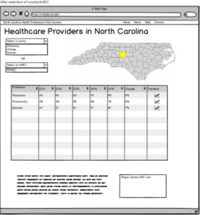
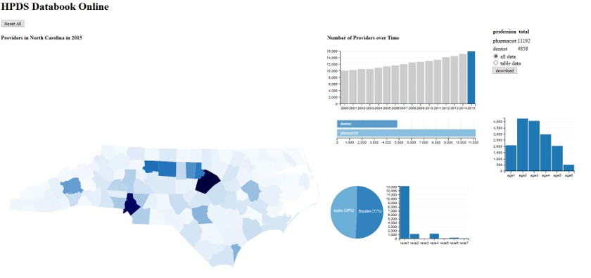
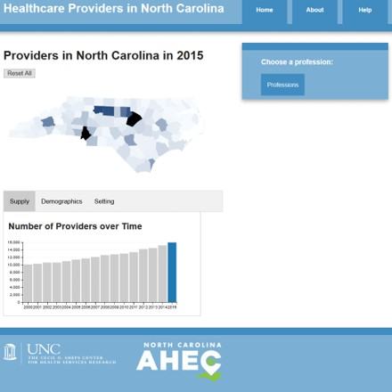
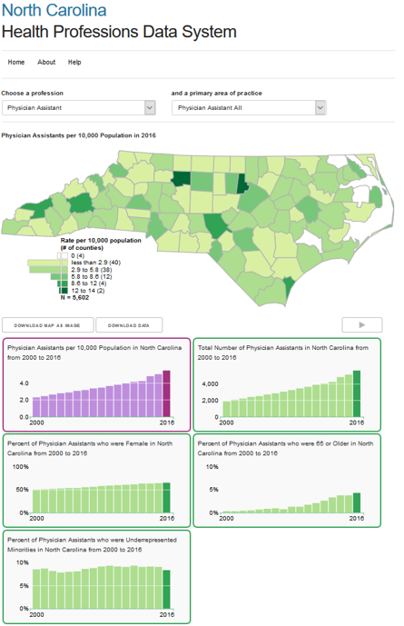
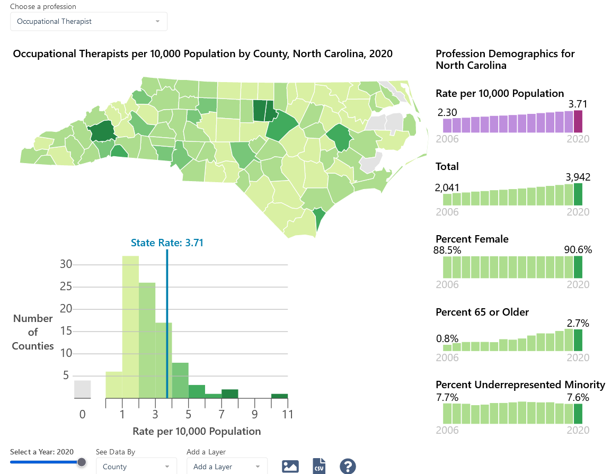https://nchealthworkforce.unc.edu/interactive/supply/
Histogram gives sense of relationship between distribution and colors. Use spark chart type layout for compact
display. Also dont have to interact to get a lot of information. Can see begin and end values.
Select year, geo, layers (urban layer). Download image, csv of data.
Built using Vue.js and whole website is a static website built with Hugo and hosted on netlify.
The website also has some blog posts, with usually static graphics.
Also some other interactive. Favorite is this D3 chart I built using data on the age and number of health
providers in rural and metro areas.
I like having these little inset maps as reference. I like the transitions, including the text transition.
Observable
https://observablehq.com/
https://observablehq.com/collection/@gallowayevan/examples
examples of how I use observable
-intro to observable
- show tutorials
- doing more data analysis in js
- arquero
- Observable Plot?
- ABP region map
- https://observablehq.com/d/3bfe237e0cdf38d6
- easy collaboration
- making static graphics
- diagram for elizabeth
- https://observablehq.com/@gallowayevan/static-mapbox-map
- figure things out
- https://observablehq.com/@gallowayevan/jitter-duplicate-points
- comparison of urban areas
- https://observablehq.com/@gallowayevan/comparison-of-urban-areas-2000-to-2018-north-carolina
- prototypes
- like using drop shadows to create 3d effect
- remix of veltman
- https://observablehq.com/@gallowayevan/using-inner-glow-to-show-grouping
- https://observablehq.com/@gallowayevan/comparison-of-rural-definitions-inner-glow-edition
Svelte
introduction to svelte
http://lessons.vaclab.unc.edu/lets_make_a_bar_chart_svg
Find us, Follow Us, Sign up For our Newsletter